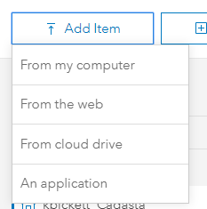
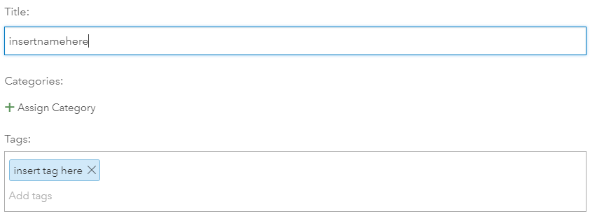
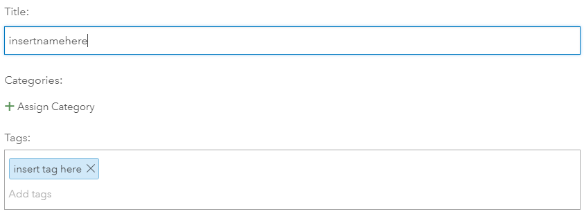

Purpose
This page will explain how to add a new feature layer in ArcGIS Online
Requirements
- You will need to have a username and password set up for you by a Cadasta team member. If you do not have a user please contact support@cadasta.org
- You will need to sign to your account - see Introduction to your account for a reminder
Steps
After logging into your ArcGIS Online account, press the "Content" tab and then select "My Content"

Press the "Add Item" button

Select the "From my computer" option

See the splash window, Add an item from my computer, appear

Press the "Choose File" button
Navigate to a zipped shapefile folder

Rename and add Tags to the new item
 

- Press the "Add Item"button
- The new layer will show up in the list of items in the "My Content" section. If you want to share this layer with any of the groups that you have access to simply press the "Share" button and select the groups you wish to share with.